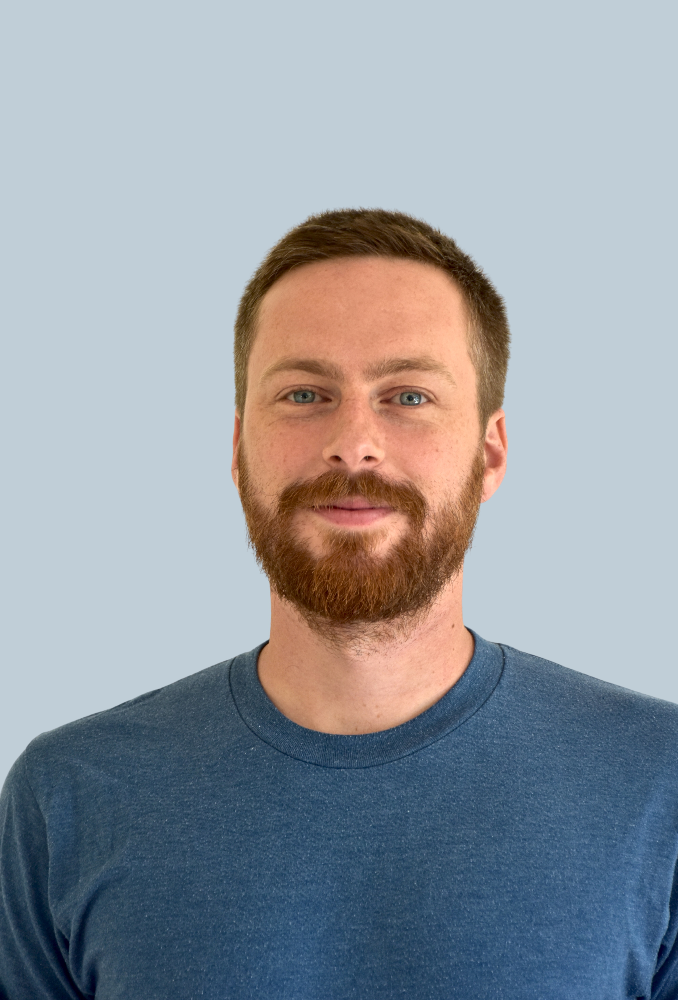

Leadership
Dr. Tristan M Stöber
Co-Founder

Tristan investigates how world models are learned in biological and artificial systems, focusing on hippocampal information processing and model-based reinforcement learning. He conducted his doctoral research at the University of Oslo, Simula Research Laboratory, and UC San Diego. Alongside Circulant Labs, he is an independent fellow at the Campus Institute Data Science, University of Göttingen, and teaches Machine Learning at University Hospital Frankfurt.

Dr. Andrew B Lehr
Co-Founder
With a background in neuroscience, mathematics, and a PhD in physics of biological and complex systems from the International Max Planck Research School at the University of Göttingen, Andrew works on the geometry of neural computation, brain-inspired algorithm development and the design of neuromorphic systems. Alongside Circulant Labs, he is a junior group leader and lecturer in neurophysiology and computational neuroscience at the University Medical Center Göttingen.